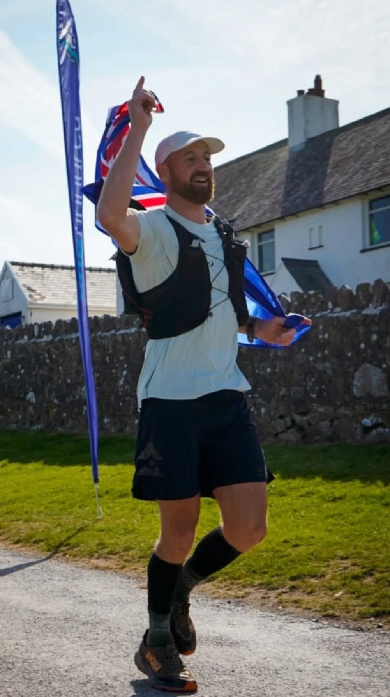
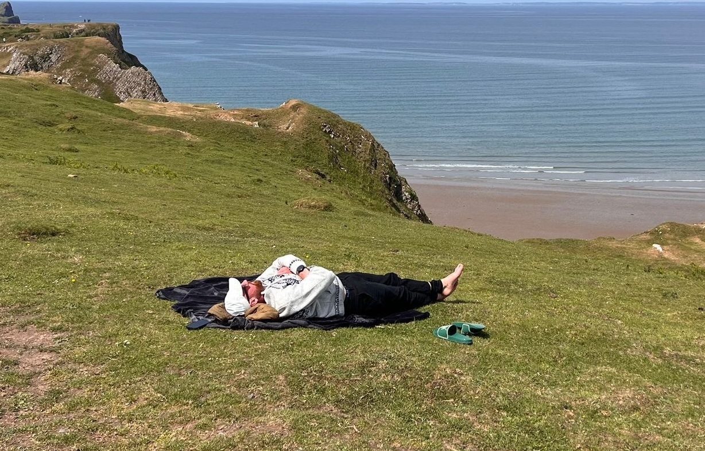

About
BETWEEN CROISSANTS AND CLIMBS
Based in Muriwai, New Zealand, Damian Watson splits his time between croissants, climbs, and long stretches of European road. If he’s not at the Muriwai Deli shaping dough, he’s somewhere uphill convincing himself the gradient is character-building.
He runs so he can shovel in the pud. He keeps running because stopping feels worse. The legs complain; something in his head calls it training.
Not big on finish-line speeches. Usually too busy finding food.

2025
Top of the One Hundred® rankings.
Stoked to finish 2025 top of the One Hundred® Endurance Trail World Championship standings after a big year. More to come. Good motivation to be even better.
Check out the official One Hundred rankings ↗Dirt Church Radio.
Good yarn with Dirt Church Radio if you want a better feel for Damo beyond the results sheet.
Listen to the full conversation ↗Up Next
Nothing locked in for 2026 just yet.
Announcement when there’s something worth announcing.
Race log
Long days out.
A few of the ones that mattered.
Mons Ultra Trail · 200 mi (Grand Final)
- 317.96 km · 12,477 m vert
- Sub 48h — 2nd overall
- Grand Final of the One Hundred® World Championship.
Trail to Heaven · 100 mi (Ladakh)
- 100 miles · +6,242 m · 3,500–5,400 m altitude
- 2nd overall at the Ladakh “Trail to Heaven”
- Part of the One Hundred® World Championship.

South Wales 200 · 200 mi
- 200 miles · 51h56m
- Course-record win at the South Wales 200
- The race that first put him on the One Hundred® World Championship radar.
On paper.
Proper record-keeping, if you're into that.
Why run this far?
It’s not just about distance.
Moving fixes most things. Clears the head, keeps the body honest, burns off the noise. Doesn’t need to be complicated — just lace up and go.
Best medicine going. Plus, it earns the pud.
Follow
Where the miles end up.
Muriwai
Off the trail.
Contact
Get in touch.
For event organisers, brands, coaching chats — or anything involving long days on trail, group tours, or good pastry.